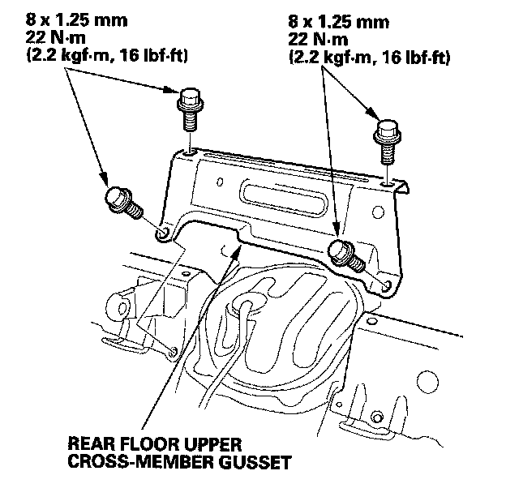

Operation CHARM
: Car repair manuals for everyone.
Home
>>
Honda
>>
2007
>>
Civic Si L4-2.0L
>>
Repair and Diagnosis
>>
Body and Frame
>>
Frame
>>
Structural Brace
>>
Service and Repair
>>
Rear Floor Upper Cross-Member Gusset Replacement
Rear Floor Upper Cross-Member Gusset Replacement
Rear Floor Upper
Cross-member
Gusset Replacement

Rear Floor Upper
Cross-member
Gusset Torque
NOTE:
Take care not to scratch body.